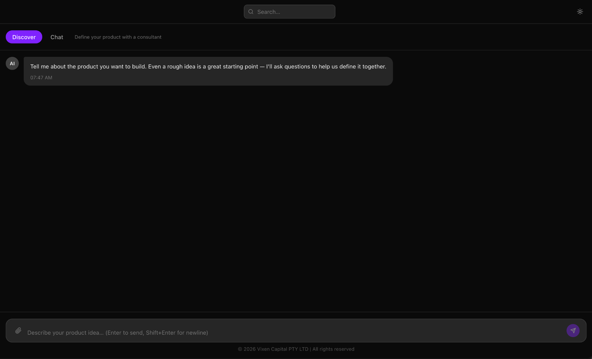
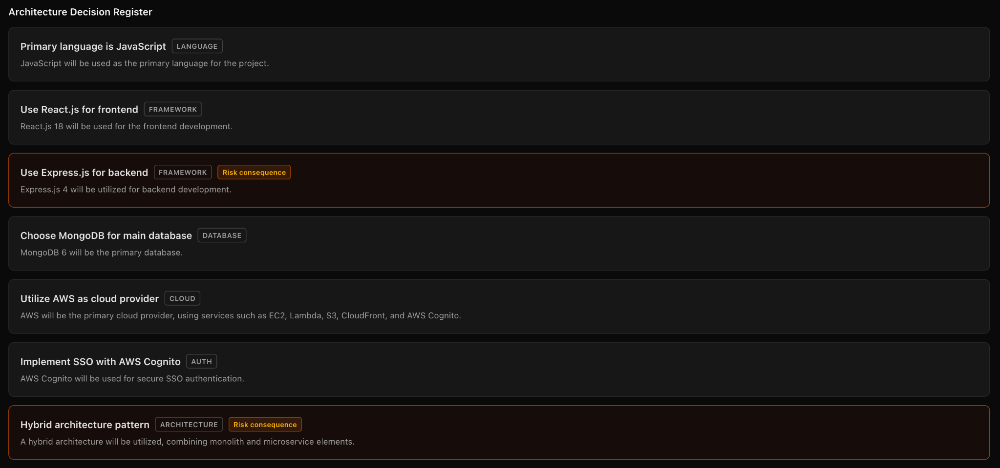
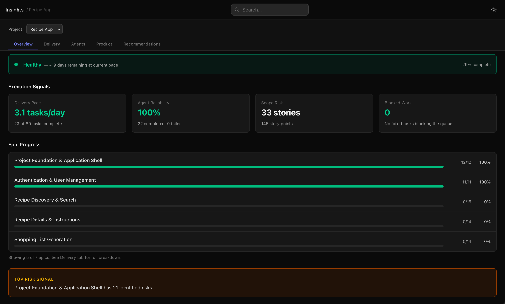

Stop Guessing How To
Build Your Startup.
Turn your idea into a structured, build-ready MVP execution system, without needing to become a CTO.

Describe your idea. VixenWorks structures it into a complete execution system.
Most Startup Ideas Don't Fail Because Of Coding.
They fail because the execution system was never built in the first place. Requirements are vague, decisions happen too late, and nobody has a reliable delivery process.
VixenWorks Creates Structure Before Development Begins
Instead of jumping directly into coding, VixenWorks guides you through a complete product execution workflow designed to reduce ambiguity before expensive mistakes happen.
Clarify what you're actually building
Guided AI-assisted workflows help you think through your product properly before development starts. Clarify the actual problem, customer pain points, market opportunities, product direction, and business goals.
- Actual problem and pain point definition
- Market opportunity and product direction
- Business goals and success criteria
Turn scattered thinking into centralized structure
Generate structured product definitions, problem statements, requirements, and implementation direction. Everything becomes centralized, organized, and execution-ready.
- Structured product definitions
- Clear problem statements and requirements
- Implementation direction, centralized
Architect the solution before building it
Automatically create project plans, architecture documents, implementation phases, dependency-aware workflows, and technical delivery structures. No more trying to invent your engineering process from scratch.
- Architecture documentation auto-generated
- Dependency-aware implementation phases
- Technical delivery structures

Transform plans into execution-ready tasks
Transform plans into granular implementation tasks, Kanban workflows, AI-agent-ready execution queues, and delivery tracking systems. Developers and AI agents finally operate with proper context.
- Granular implementation tasks
- Kanban workflows and delivery tracking
- AI-agent-ready execution queues

What Founders Actually Gain
Real, measurable outcomes for founders who stop guessing and start building with structure.
Faster Time To MVP
Move from idea to execution dramatically faster without spending months organizing product decisions manually.
Reduced Development Waste
Avoid expensive rewrites caused by unclear requirements and poor planning. Stop paying for work that has to be redone.
Better AI Outputs
Most AI coding tools fail because they lack structured execution context. VixenWorks solves that problem first, before development begins.
Less Reliance On Expensive CTO Hires
Get architecture-aware planning and structured execution workflows without needing a full engineering leadership team upfront.
Improved Investor Readiness
Generate clearer product direction, execution plans, and implementation visibility. Show investors you've done the work.
Confidence In What Gets Built
Know exactly what is being built, why it matters, how it connects together, and what happens next, at every stage.
AI Coding Tools Generate Code.
VixenWorks Structures Execution.
Most AI tools focus on writing code faster. But coding is rarely the hardest part. The real challenge is defining the right product, structuring requirements, aligning architecture, and reducing execution ambiguity. That's where startups lose momentum.
Generate code fast.
Speed without structure means building the wrong thing, faster. Then rewiring it later at full cost.
- No product definition structure
- Disconnected code without architecture context
- No delivery sequencing or governance
- Inconsistent outputs from missing context
Structures execution first.
VixenWorks was built specifically to solve the part AI coding tools ignore: the execution layer that makes everything else reliable.
- Structured product definitions before coding
- Architecture-aware planning and sequencing
- Dependency-aware delivery orchestration
- Consistent AI outputs from structured context
Everything Needed To Go From Idea → Execution
A complete system designed around how great products actually get built, from the first rough thought to developer-ready delivery.
Guided Product Discovery
Structured workflows that help founders clarify product direction and reduce uncertainty before a single line of code is written.
AI-Assisted Product Planning
Generate product definitions, structured requirements, and implementation-ready planning documents automatically.
Architecture-Aware Project Design
Automatically generate architecture documentation and technical implementation structures without needing engineering expertise.
Dependency-Aware Task Generation
Break projects into detailed execution-ready tasks that developers and AI agents can follow reliably, without ambiguity.
Delivery Boards & Backlogs
Track progress using structured Kanban workflows and backlog management systems. Always know what's been done and what's next.
Analytics & Delivery Insights
Identify bottlenecks, blocked tasks, delivery risks, and execution health in real time. Know before things go sideways.
Why Most Founders Stay Stuck
Most founders try one of three approaches. None of them solve the real problem.
Instead of rushing into development chaos, you first create:
That dramatically improves delivery outcomes, for both human teams and AI agents.
Your Product Idea Deserves More Than Chaos
Stop stitching together random AI prompts, scattered docs, and disconnected workflows.
Start building with a structured execution system designed for modern AI-assisted product delivery.
Frequently Asked Questions
No. VixenWorks is specifically designed to help founders structure products and delivery workflows without requiring deep engineering expertise.
No. VixenWorks focuses on structured execution planning, architecture alignment, delivery orchestration, and implementation clarity, not just code generation.
- Structured execution planning
- Architecture alignment
- Delivery orchestration
- Implementation clarity
Absolutely. Technical teams can use generated architecture documents, implementation tasks, delivery workflows, and project plans directly within their engineering process.
No. It improves execution quality, planning clarity, and delivery coordination for both humans and AI agents. Developers work better with more context, not less.
Ideal for:
- Startup founders and solo founders
- MVP-stage products
- Early SaaS teams
- Innovation teams and product-led businesses
idea → structured execution →
delivery.
VixenWorks helps founders move from idea to structured execution to delivery with dramatically less ambiguity, wasted spend, and delivery chaos.